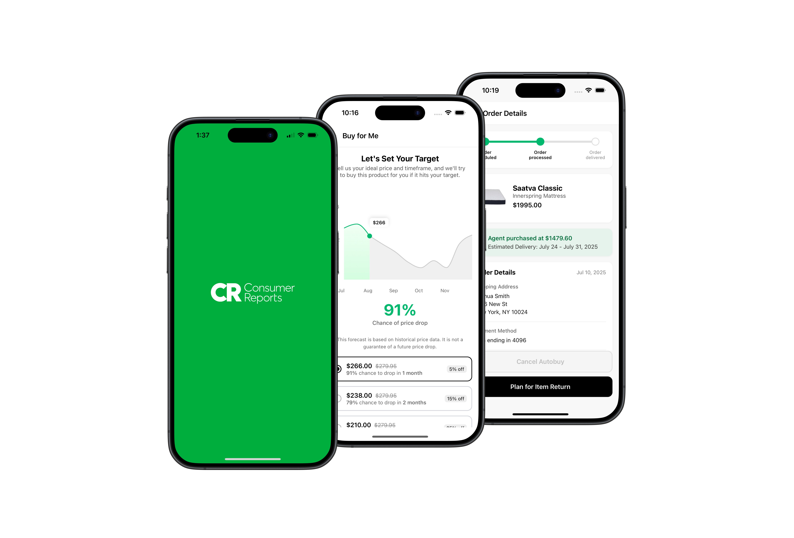

Best Time to Buy
2.0
Our Solution
The Team
Our Process
Our Solution
The Team
Our Process
Introducing Best Time to Buy
2.0

Helping consumers make informed purchasing decisions with confidence and ease.
Explore The Solution
Understand The Process